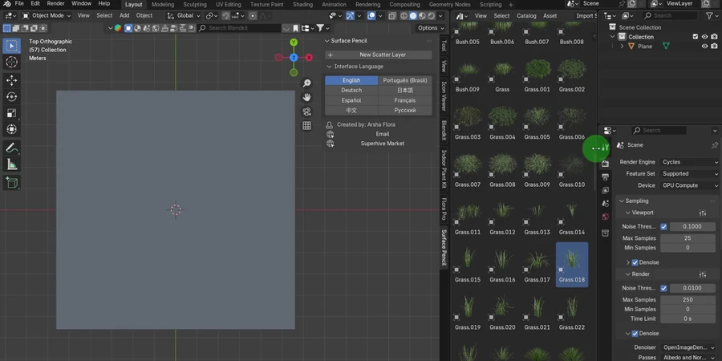

FEATURE 01 / 05
Four ways to scatter.
Outline an area to fill a selected region, trace a path for linear placement, paint coverage with adjustable brush radius, or scatter across an entire mesh. Choose the method that fits your scene.

Preview unavailable.
Check assets/video/video1.webp
Check assets/video/video1.webp